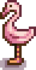
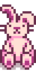
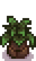
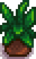
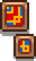
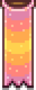
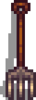

Se déroule le 13 de Printemps
Ce premier festival prend place chaque année à Pelican Town entre 9h et 14h. Lors de cette journée, le joueur aura la possibilité de participer à une chasse à l’oeuf en parlant à Lewis. L’évènement se termine lorsque Lewis annonce le gagnant de la chasse ce qui ramène le joueur dans sa ferme à 22h.
Pendant les festivals, parler aux PNJ n’augmente pas leur niveau d’amitié.
Pour gagner :
Si le joueur est seul, il devra trouver 9 oeufs.
S’il y a 2 joueurs sur une même session, 6 oeufs sont nécessaires pour gagner.
S’il y a 3 joueurs sur une même session, 5 oeufs sont nécessaires pour gagner.
S’il y a 4 joueurs sur une même session, 4 oeufs sont nécessaires pour gagner.
Sinon Abigail remporte la chasse.
Les récompenses :
Pour la première victoire d’un joueur, vous recevez un chapeau de paille.
Si le joueur a déjà reçu cette récompense, il reçoit 1000po.
En multijoueur, s’il y a une égalité, chaque joueur reçoit une récompense.
Boutique d'objet
| Image | Nom | Description | Prix |
|---|---|---|---|
|  | Flament rose de jardin | Un objet décoratif pour votre ferme. |  400 po 400 po |
|  | Lapin en peluche | C’est gros, c’est doux, et c’est mignon. | 2 000 po |
 |
Graine de fraise | À planter au printemps. Prends 8 jours pour mûrir. Produiront des fraises. | 100 po |
|  | Plante saisonnière | Une plante décorative qui change au fil des saisons. Elle n’a pas besoin d’être arrosée. | 350 po |
|  | Plante saisonnière | Une plante décorative qui change au fil des saisons. Elle n’a pas besoin d’être arrosée. | 350 po |
|  | Tableaux colorés | Peut se mettre à l’intérieur de votre maison. | 500 po |
|  | Bannière de couleur pastel | Peut se mettre à l’intérieur de votre maison. | 1 000 po |
|  | Fourche décorative | Peut se mettre à l’intérieur de votre maison. | 1 000 po |
Note personelle
Classement 4/9
Ce premier évènement sort du lot, il met en compétition les joueurs à travers une chasse aux oeufs, mais il devient vite lassant au fil des années dans le jeu car la cachette des oeufs à trouver ne change pas.